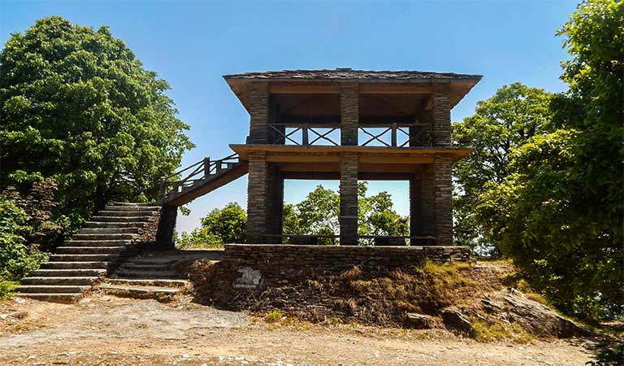
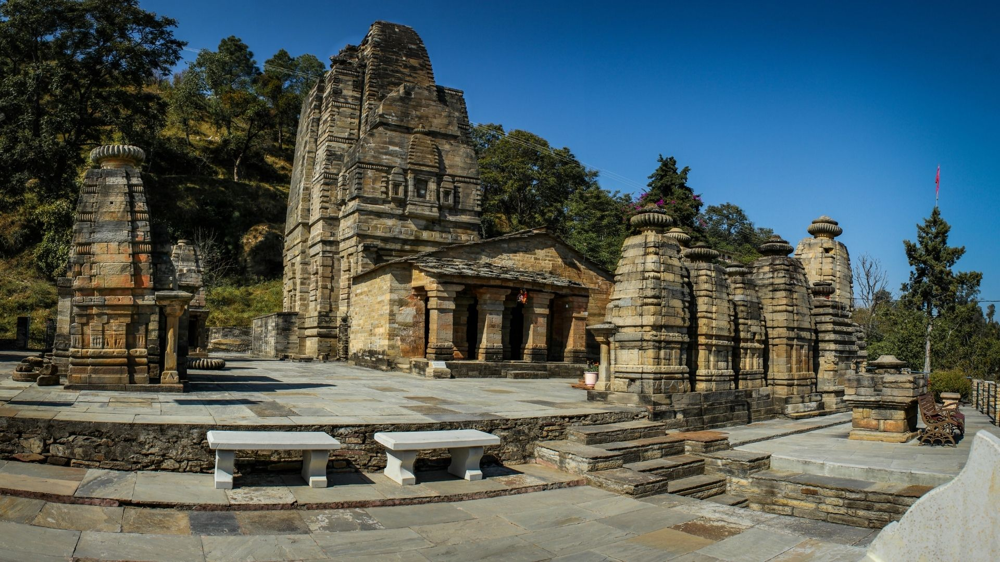
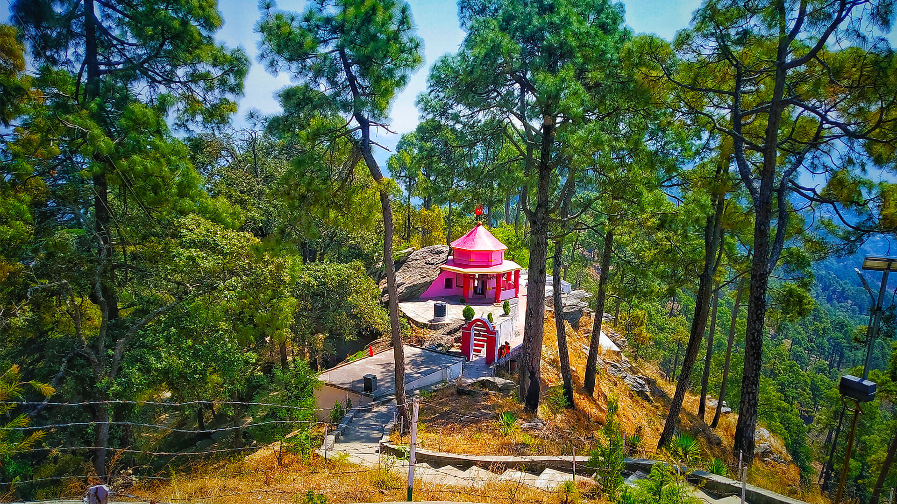
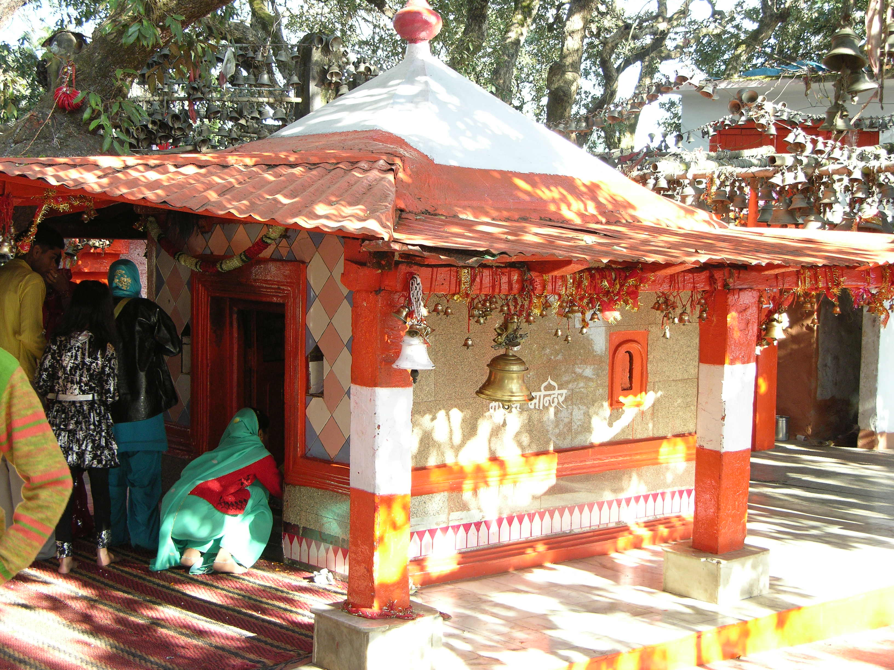
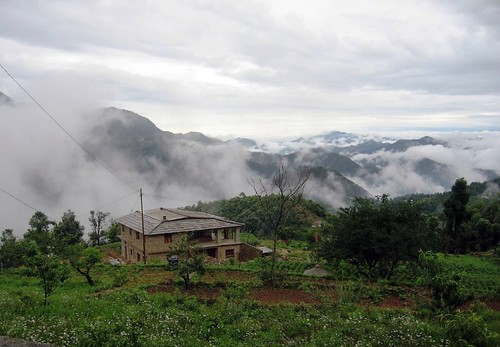

Your
Uttarakhand
Home
Almora
Destinations
Top Recommended
Places to Visit in
Almora

Highest Point
Zero Point
1 km from City Center
Highest point in Binsar Wildlife Sanctuary with panoramic views of Himalayas (Kedarnath, Nanda Devi).

Archaeological Site
Jageshwar
9 km from City Center
Cluster of 124 temples built in medieval style, believed to house one of the 12 Jyotirlingas.

Temple
Kasar Devi
5 km from City Center
Ancient temple entered visited by Swami Vivekananda. Known for the geomagnetic field.

Temple
Chitai Temple
4 km from City Center
Famous temple of Lord Gollu (Lord Shiva), built during the Chand regime.

Hill Town
Dunagiri
14 km from City Center
Solitary hill town in Kumaon Himalayas offering peace and spirituality.